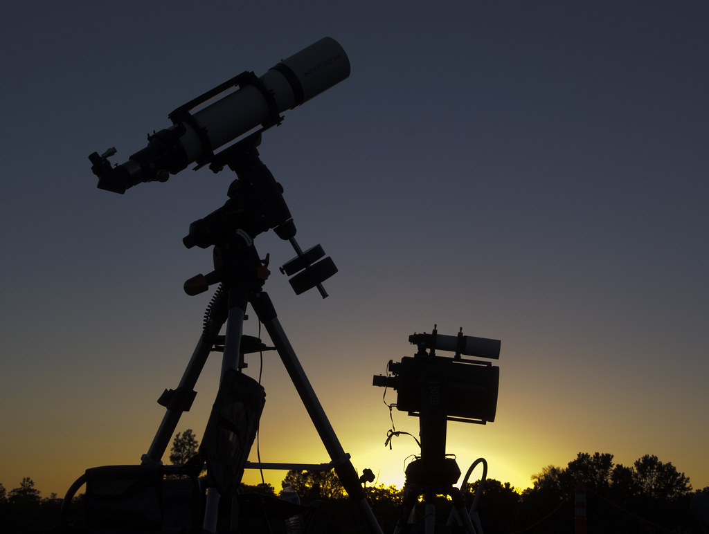

jtsDMPK
Biomathematician and Research Scientist
With over a decade of experience in biomedical research, I've worked in a variety of contexts from wet lab bench science to biostatistics consultation to, most recently, biomathematical modeling. Though I've worked on projects in many fields, quantitative pharmacology and circadian rhythms are two fields I've devoted a particular amount of time to.
Consider checking out the About Me section for a look at my résumé or CV, or browse through the other pages for some information about projects I've worked on in the past or just things I find neat. Thanks!

